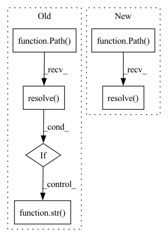

Pattern ID :22097
Before Change
self["provider_uri"][_freq] = str(Path(_uri).expanduser().resolve())
elif isinstance(_provider_uri, str):
if _mount_path is not None:
self["mount_path"] = str(Path(_mount_path).expanduser().resolve() )
if self.get_uri_type(_provider_uri) == QlibConfig.LOCAL_URI:
self["provider_uri"] = str( Path(_provider_uri).expanduser().resolve())
else:
raise TypeError(
f"The types supported by provider_uri are [str, dict], " f"not {type(_provider_uri)}: {_provider_uri}"
)After Change
_mount_path[_freq] = (
_mount_path[_freq]
if _mount_path[_freq] is None
else str(Path(_mount_path[_freq]).expanduser().resolve() )
)
self["provider_uri"] = _provider_uriIn pattern: SUPERPATTERN
Frequency: 3
Non-data size: 6
Instances Fragment ID: 70051215
Project Name: microsoft/qlib
Commit Name: e84cc23589e7169c59b9af3eb42e16fedc9c3e1e
Time: 2021-09-07
Author: zhu.pengrong@foxmail.com
File Name: qlib/config.py
M Class Name: QlibConfig
N Class Name: QlibConfig
M Method Name: resolve_path(1)
N Method Name: resolve_path(1)
M Parent Class: Config
N Parent Class: Config
M File Name: qlib/config.py
N File Name: qlib/config.py
M Start Line: 257
M End Line: 278
N Start Line: 294
N End Line: 320
Before Change
def resolve_path(self):
// resolve path
if self["mount_path"] is not None:
self["mount_path"] = str(Path(self["mount_path"]).expanduser().resolve() )
if self.get_uri_type() == QlibConfig.LOCAL_URI:
self["provider_uri"] = str(Path(self["provider_uri"]).expanduser().resolve())After Change
assert isinstance(_mount_path, dict), f"type(provider_uri) != type(mount_path); {_mount_path}"
_miss_freq = set(_provider_uri.keys()) - set(_mount_path.keys())
assert len(_miss_freq) == 0, f"mount_path is missing freq: {_miss_freq}"
self["mount_path"] = {_freq: str(Path(_path).expanduser().resolve() ) for _freq, _path in _mount_path}
for _freq, _uri in _provider_uri.items():
if self.get_uri_type(_uri) == QlibConfig.LOCAL_URI:
self["provider_uri"][_freq] = str( Path(_uri).expanduser().resolve())
elif isinstance(_provider_uri, str):
if _mount_path is not None:
self["mount_path"] = str(Path(_mount_path).expanduser().resolve())
Fragment ID: 70051221
Project Name: microsoft/qlib
Commit Name: d1cbf4c3d9cb1c659e001783a3957c5035c32ff0
Time: 2021-09-07
Author: zhu.pengrong@foxmail.com
File Name: qlib/config.py
M Class Name: QlibConfig
N Class Name: QlibConfig
M Method Name: resolve_path(1)
N Method Name: resolve_path(1)
M Parent Class: Config
N Parent Class: Config
M File Name: qlib/config.py
N File Name: qlib/config.py
M Start Line: 265
M End Line: 271
N Start Line: 257
N End Line: 280
Before Change
shutil.copy(Path(self.project_root) / "*", self._experiment_dir / "code")
script_path = Path(__file__).resolve()
root_path = Path(self.project_root)
relative_script_path = Path(os.path.relpath(script_path, start=root_path))
self._run_file_path = self._experiment_dir / "run.sh"After Change
logging.debug(f"now copying files to {tmp_path}....")
for file_name in self.project_code:
logging.debug(f"copying {file_name}...")
file_path = (root_path / Path(file_name)).resolve()
if file_path.is_dir():
shutil.copytree(str(file_path), str( tmp_path / file_name) , dirs_exist_ok=True)
else:
shutil.copy(str(file_path), str(tmp_path / file_name))
logging.debug(f"copying files to {code_path}....") Fragment ID: 70051216
Project Name: hpi-xnor/bitorch
Commit Name: 25da945846e5f52901d336d7d52d20b28947a25b
Time: 2021-08-19
Author: overkill98@web.de
File Name: examples/image_classification/utils.py
M Class Name: ExperimentCreator
N Class Name: ExperimentCreator
M Method Name: create(5)
N Method Name: create(5)
M Parent Class:
N Parent Class:
M File Name: examples/image_classification/utils.py
N File Name: examples/image_classification/utils.py
M Start Line: 211
M End Line: 215
N Start Line: 257
N End Line: 276